Activity: Creating an adjustable assembly
Overview
-
The objective of this activity is to show how to create an adjustable assembly to be used in a higher level assembly.
In this activity you will create and place an adjustable assembly.
Click here to download the activity file.
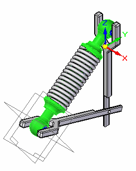
The assembly you will place will later be defined as adjustable.
Open the assembly arms.asm. Activate all the parts in the assembly.
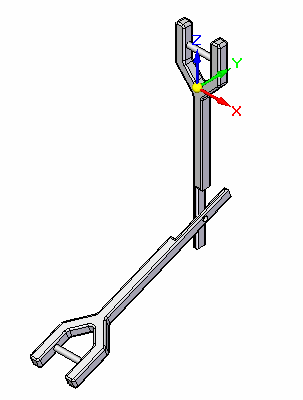
From the parts library, drag shock_absorber1.asm into the assembly window.
Using QuickPick, activate the part sleeve.par. If you cannot select it, it may need to be activated by clicking the Activate button on the Assemble command bar.
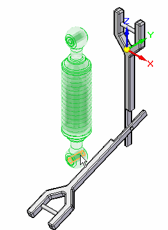
Using Flashfit, select the cylinder in sleeve.par.
Select the cylindrical shaft in arm.par as shown.
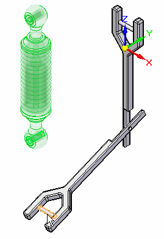
For the next relationship select the cylinder in sleeve.par as shown.
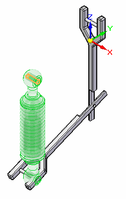
Select the cylindrical shaft in arm.par as shown.
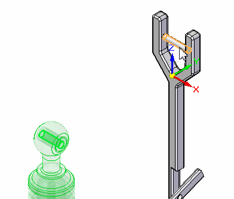
Select the Center-Plane relationship from the menu. Set the selection type to Double.
Select the faces shown in the order shown.
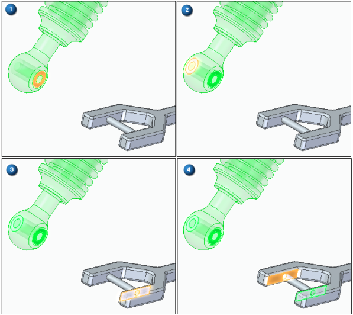
The subassembly is placed and is fully constrained.
Observe in Pathfinder that all the parts of the assembly are fully positioned.
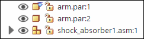
The assembly you will place will be defined as adjustable.
Click the Select Tool. In PathFinder, right click the subassembly shock_absorber1.asm. Click Simplified/Adjustable then click Adjustable Assembly.
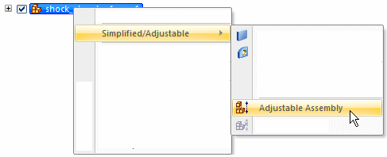
Click OK to accept the warning message shown.
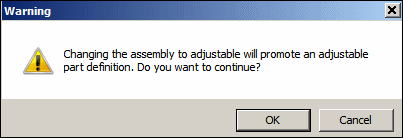
Observe in PathFinder that all the parts of the assembly are not fully positioned. Because the assembly is adjustable, the arm has freedom to move.
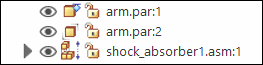
Choose the Home→Modify→Drag command  .
.
Drag arm.par as shown into different positions. Observe how the spacing between the cylinders adjusts and that the spring adjusts to the spacing defined by the new location of the arm.
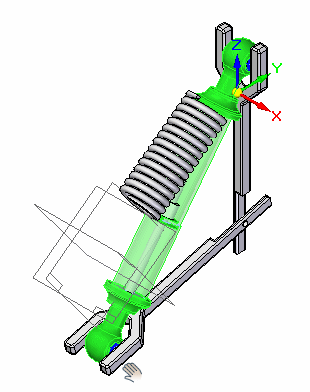
Drag the arm to several different positions and observe how the assembly adjusts.
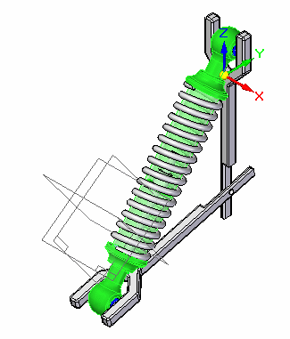
The assembly shock_absorber1.asm has a Mate relationship defined with a range offset. This limits the range of travel for the shock absorber. You can also use a linear element as a path to achieve this.
Save and close the assembly. This completes this activity.
Motors defined in the top level of an assembly will move under constrained parts. If an subassembly contains a motor, the motor will not move the unconstrained parts unless the subassembly is made adjustable.
In this activity you placed an assembly with an adjustable part and defined the assembly as adjustable.
-
Click the Close button in the upper-right corner of this activity window.
Answer the following questions:
-
What are the characteristics of an adjustable assembly?
-
How do you prepare an assembly to be adjustable?
-
If a motor exists in a subassembly and you would like to have that motor control the position of under constrained parts, how could you do it?
-
When a subassembly contains an under constrained part and the subassembly is made adjustable, constraints to the under constrained part can be made in the higher level assembly. Where can you view and edit the relationships used to position the part?
-
What are the characteristics of an adjustable assembly?
Specifying that a subassembly is adjustable allows you to place positioning relationships between parts in the subassembly while in the higher-level assembly. This is not possible with a rigid subassembly.
-
How do you prepare an assembly to be adjustable?
To use the Adjustable Assembly functionality, the subassembly should be left under-constrained in the range of motion in which you want to adjust. This allows you to apply the relationship(s) that you want to adjust in the higher level assembly, not in the subassembly.
-
If a motor exists in a subassembly and you would like to have that motor control the position of under constrained parts, how could you do it?
Make the subassembly with the motor adjustable.
-
When a subassembly contains an under constrained part and the subassembly is made adjustable, constraints to the under constrained part can be made in the higher level assembly. Where can you view and edit the relationships used to position the part?
You can view and edit the relationships of an under constrained part in an adjustable subassembly in the lower pane of pathfinder.